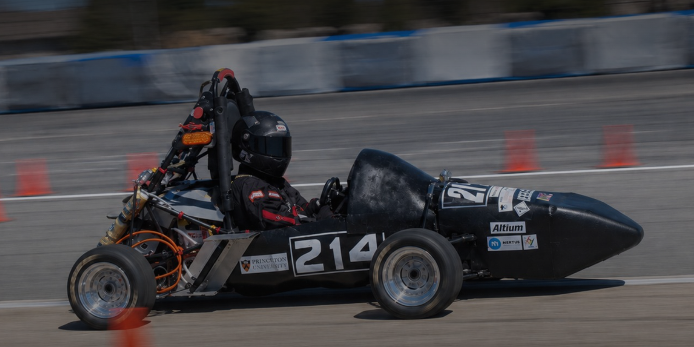
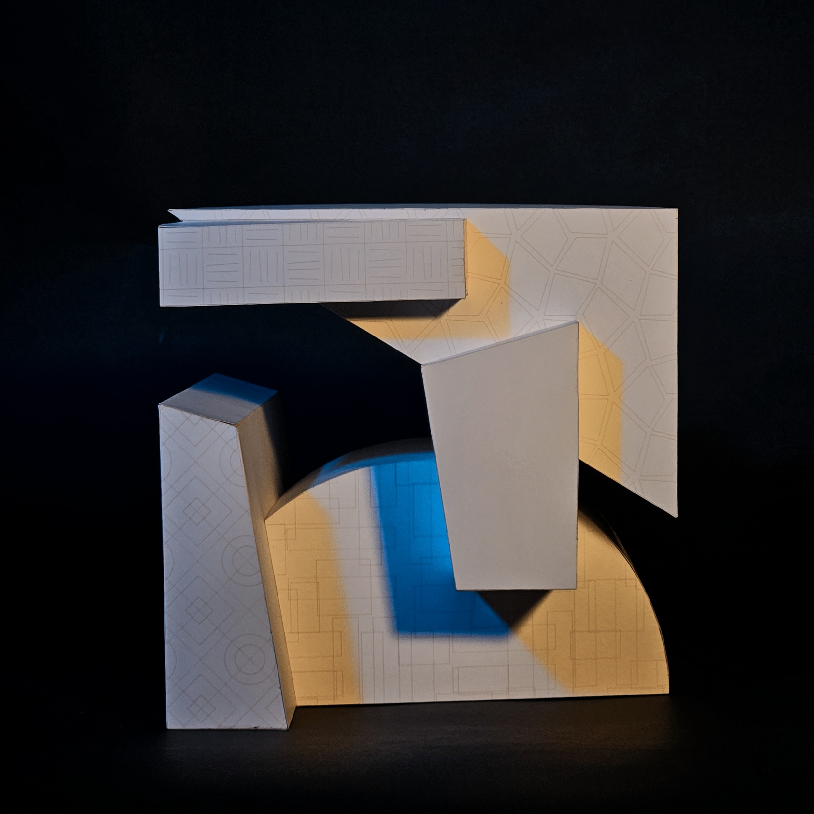
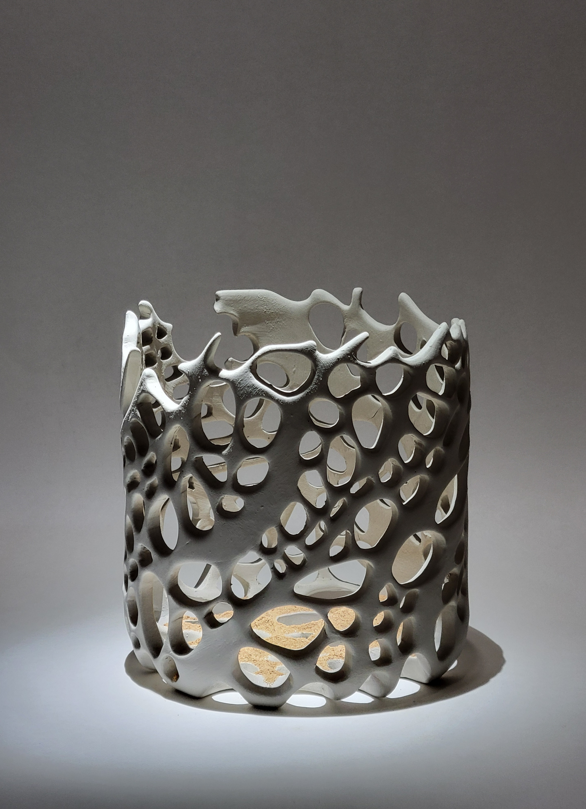
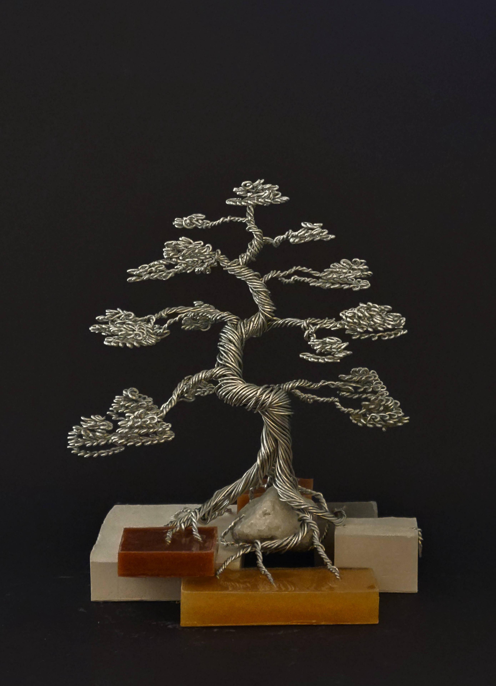
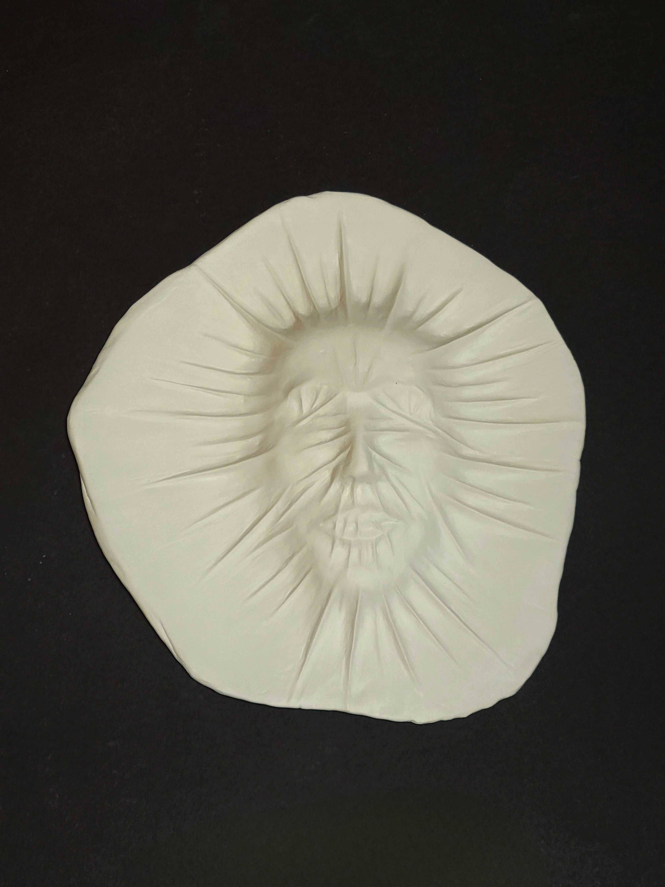
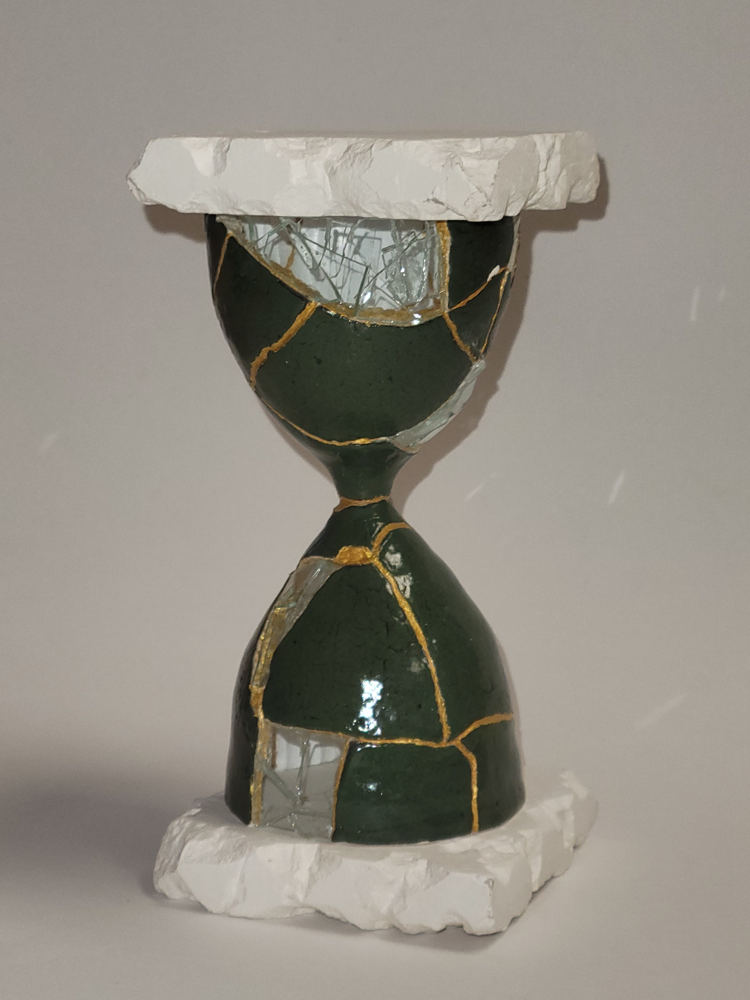
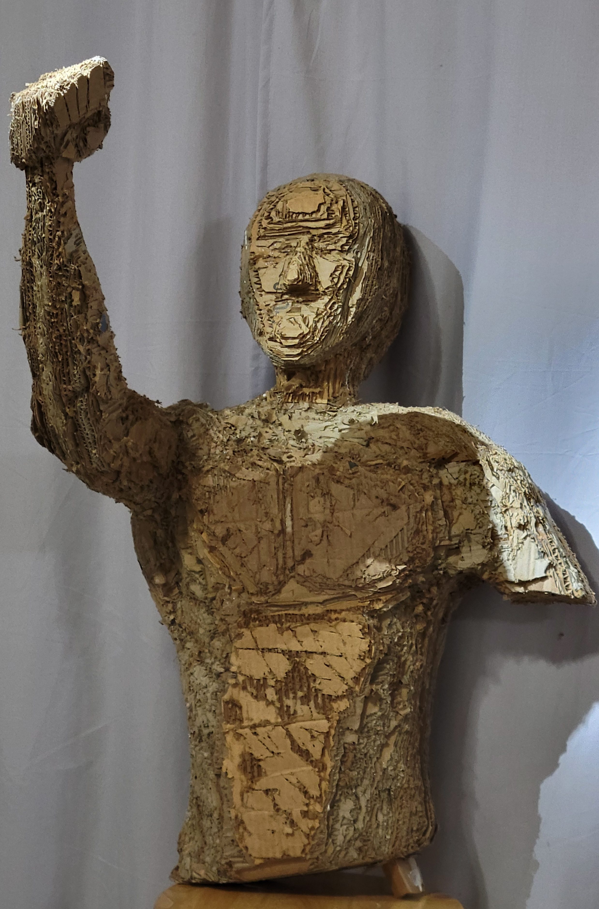
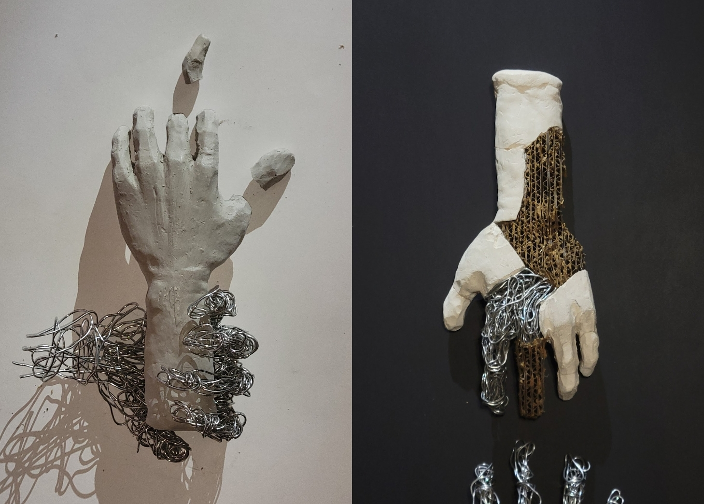
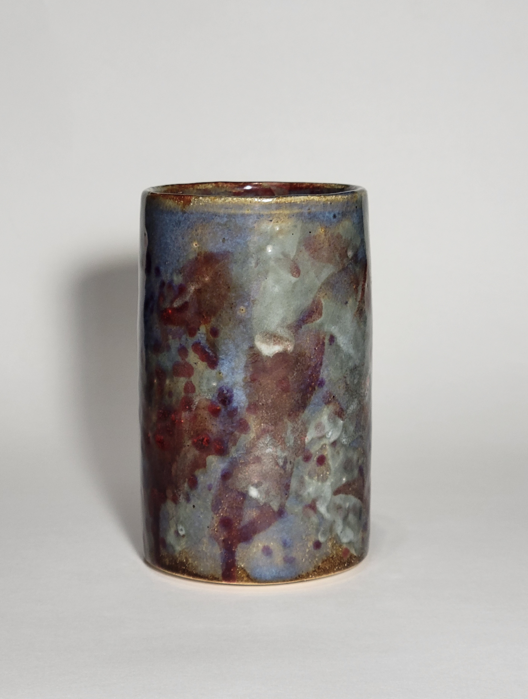
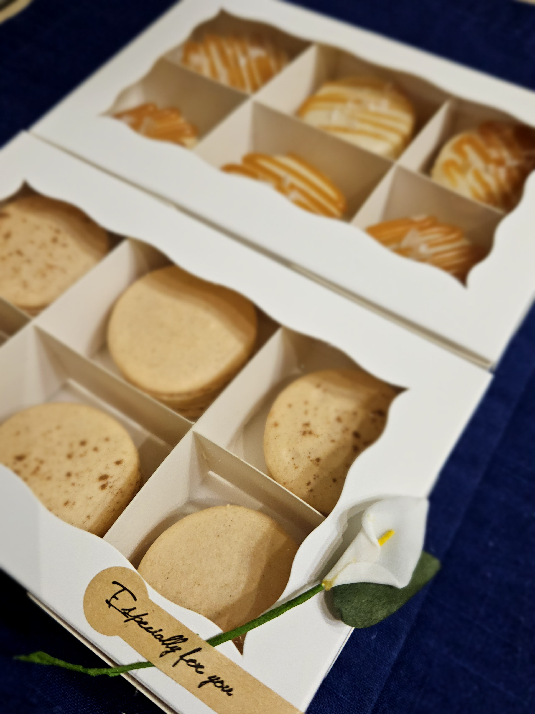

Fast Lab
Researching polishing and surface characterization procedures for airfoil and testing modular 3D printed airfoils for high Reynolds number aerodynamic research.
Learn moreHello! My name is Juan, and I am a sophomore at Princeton. I am currently working as a undergraduate researcher with FAST Lab on arifoils and high Reynolds numbers. I am passionate in problem solving and creative thinking and the way those two intersect together to create fun solutions.
Outside of academics, I am in club tennis, I make art, and I enjoy playing the guitar and baking. Not many people know that I grew up in Russia but my first language was Korean. Every year in the summer, I like to teach Korean to elementray students at my church, similar to how I learned Korean myself! In my free time, I like to learn new things, whether that is getting to know my freinds better, learning new receipes, how to make my own leather wallet, or making an automatic watch.
A future vision of mine is to become successful as a creative problem solving engineer, who leaves the world a better and easier place to live in. Moreover, I want to honor God through my work, and I have dreams to plant schools in underdeveloped countries to help children learn and grow. My motivation ultimately is to give back to the world and my communities that gave me the opportunity to be where I am today.
Researching polishing and surface characterization procedures for airfoil and testing modular 3D printed airfoils for high Reynolds number aerodynamic research.
Learn more
Summer research intern. Researched a sign language recognition and translation model to improve translation accuracy.
Learn morePrinceton Robotics team. Researching the design and implementation of the main carriage for the Droid robot.
Learn more
talk about PRE. - More to come!
Learn more
talk about what I did in the winter internship.
Learn moreMy proccess of making a bike.
More to come
talk about what I did in class.
Learn moreHere are some of my artworks. I enjoy making art in my free time, and I have been doing since I was a kid making origami. Making something beutiful out of something plain has always been a fun procces for me. The first six works are a collection called The usefulness. Rest are me having a fun time with art! Art is a way for me to relax and unwind after a long day of work or school. I hope you enjoy looking at my artwork as much as I enjoyed making it!
If you want to learn more about the The usefulness collection, click here!

Description of the piece

Description of the piece

Description of the piece

Description of the piece

The final product from my performance. ~100 layers of cardboard.

Description of the piece

